A.1: Shoot the Pictures
To shoot photos with a projective transformation, we should stand somewhere and rotate while taking pictures. This makes us have a fixed center of projection. I took pictures in a busy cafe, outside in a geometric building, and inside a complex architectural build. For each location, I took a photo of it straight on and then turned a bit to the left and right to get 3 pictures with projective transformations.
Image Set 1: Free Speech Movement Cafe
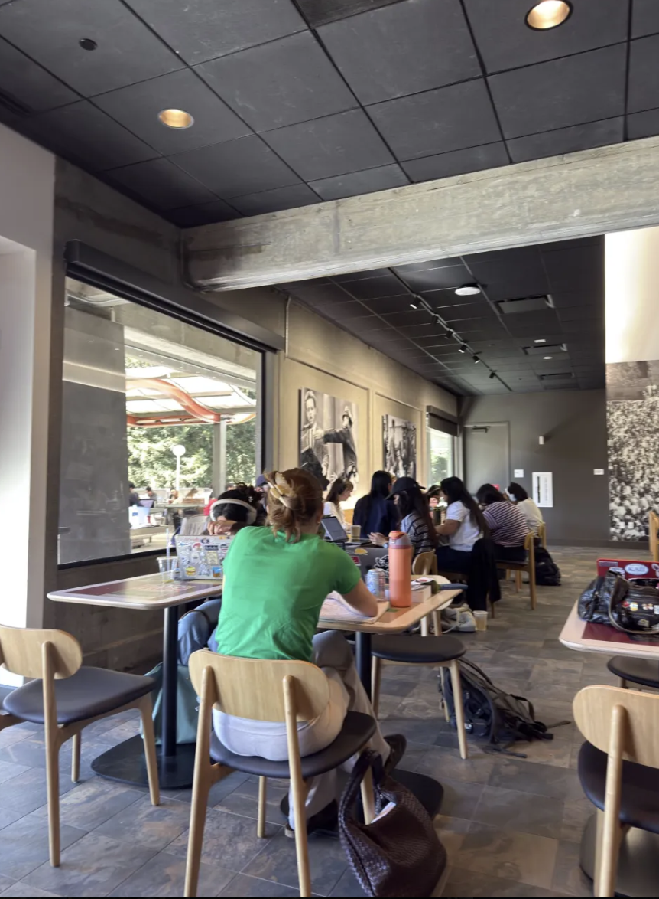
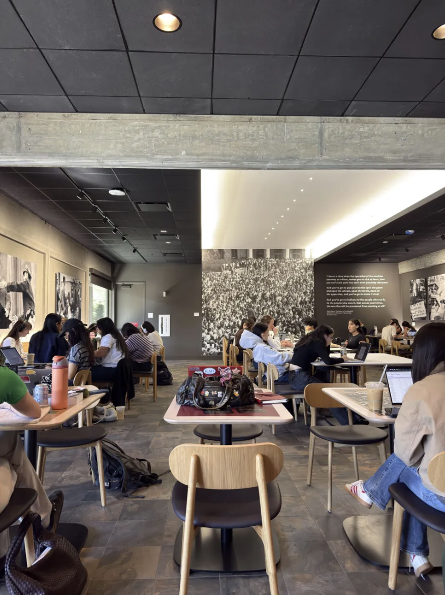
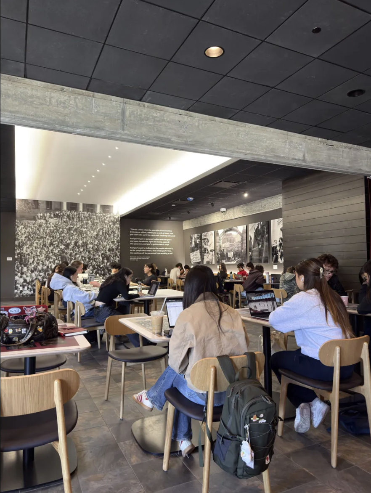
Image Set 2: Building Front
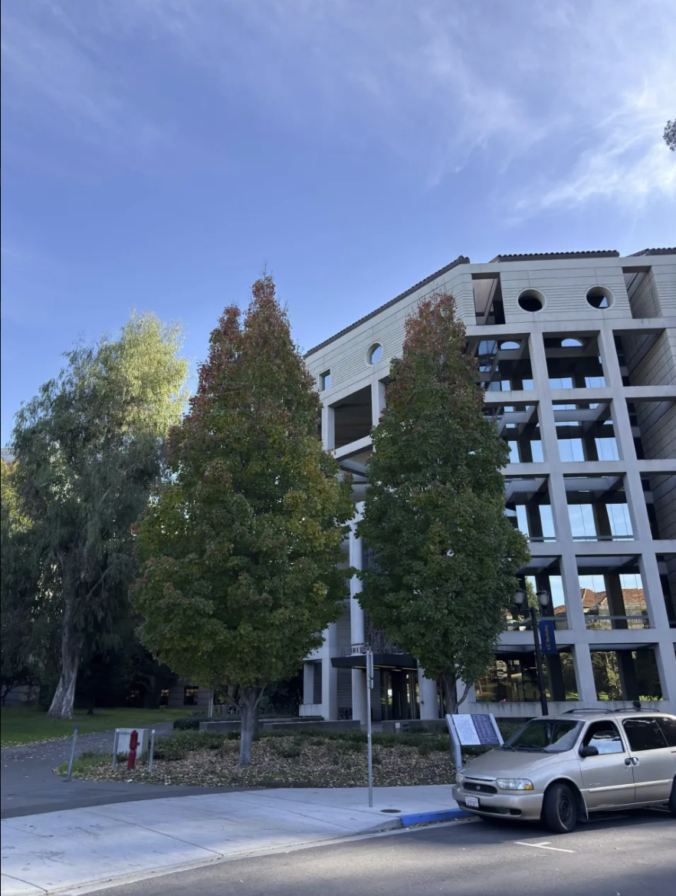
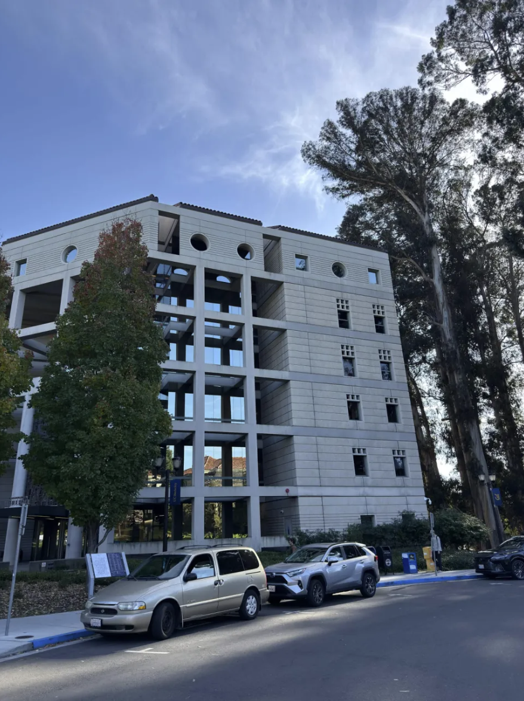
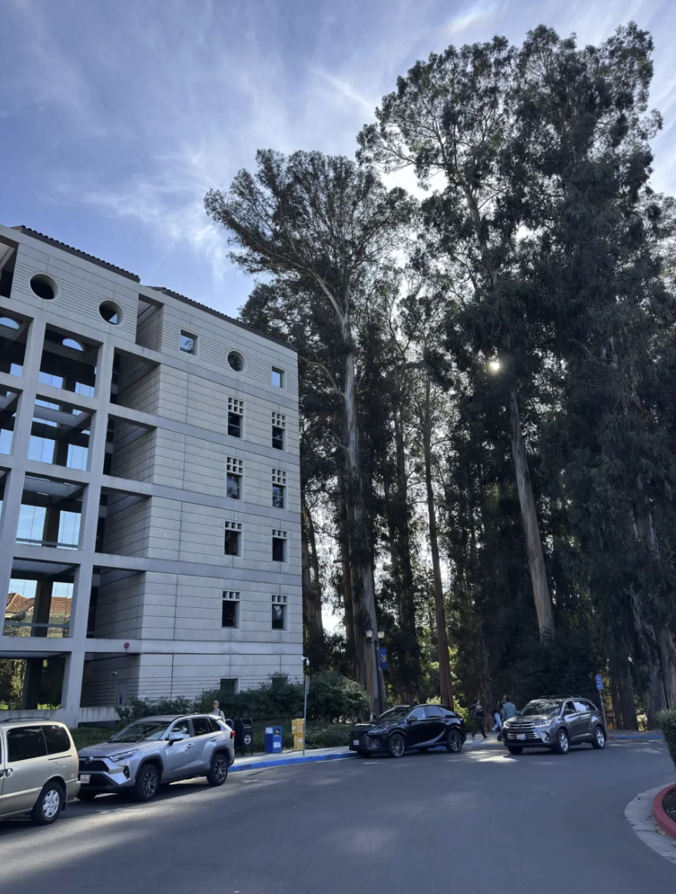
Image Set 3: Inside Gateway
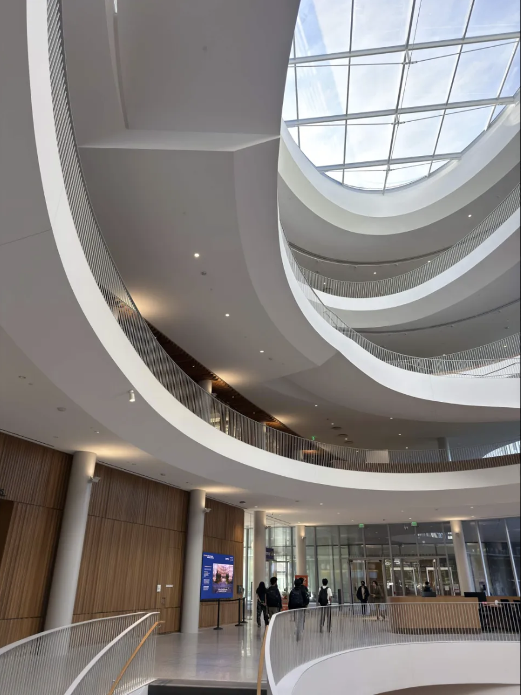
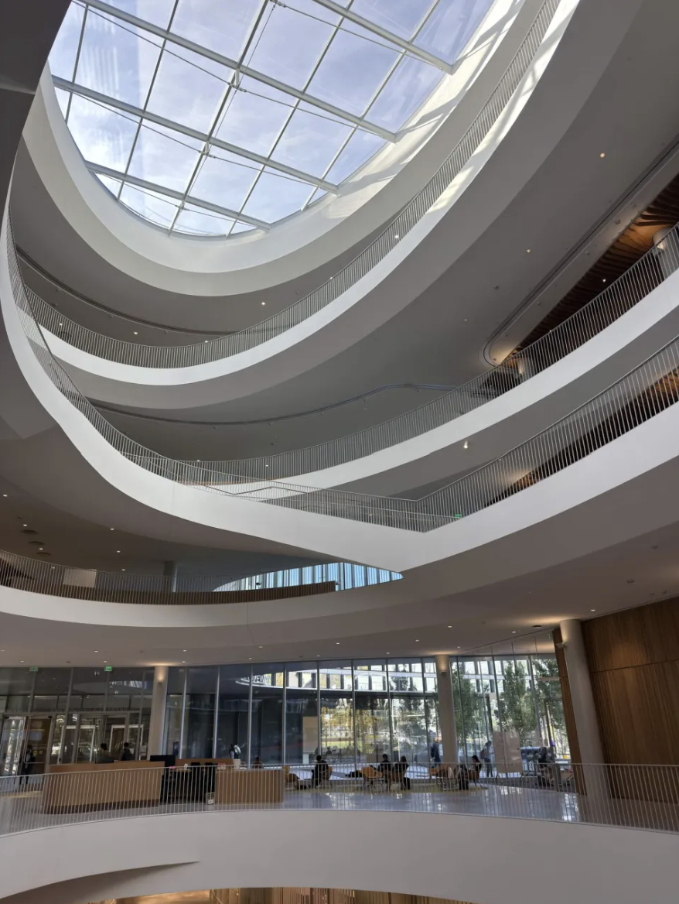
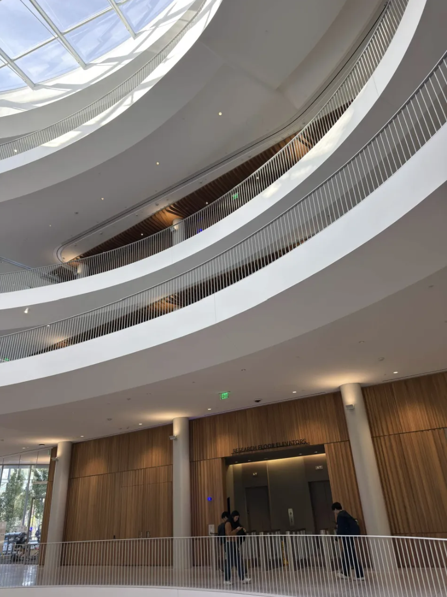
A.2: Recover Homographies
To warp one image into the coordinate system of another, we need a homography matrix (denoted as H) to map the points from one image to another. We first collect 8 points using ginput and selecting 8 corresponding points (shown below). The last entry in our matrix is a 1 in order to retain the scale of the image. These are populated into A as the original points, and b represents the target coordinates. This is an overdetermined system due to the high quantity of points we are using, so least squares is used to average out the noise. By solving Ah = b, we can get the homography matrix that will map the original points (A) to the target points (b).
Image Set 1: Point Correspondences
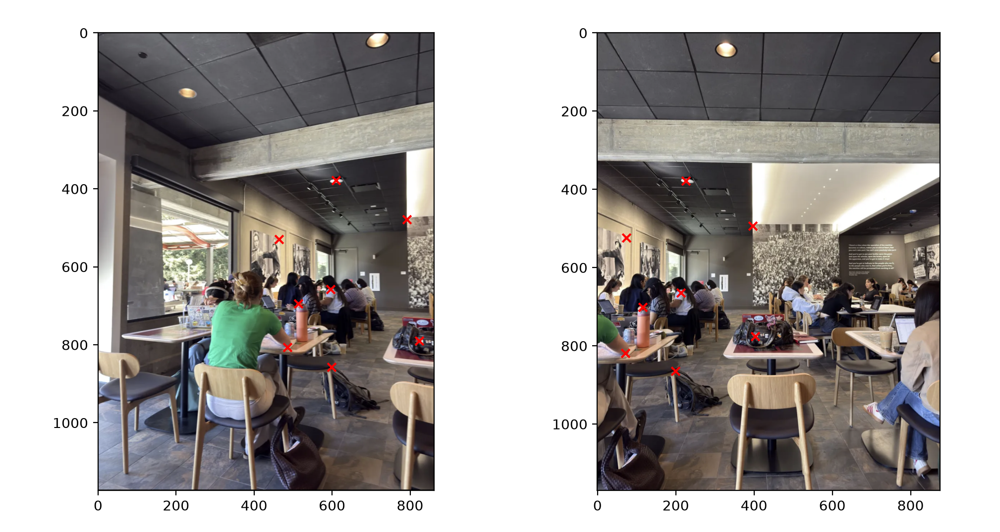
Set 1: System of Equations (Ah=b)
| 4.8548e+02 | 8.0631e+02 | 1.0 | 0.0 | 0.0 | 0.0 | -3.4573e+04 | -5.7420e+04 |
| 0.0 | 0.0 | 0.0 | 4.8548e+02 | 8.0631e+02 | 1.0 | -3.9749e+05 | -6.6017e+05 |
| 5.1343e+02 | 6.9450e+02 | 1.0 | 0.0 | 0.0 | 0.0 | -5.9318e+04 | -8.0236e+04 |
| 0.0 | 0.0 | 0.0 | 5.1343e+02 | 6.9450e+02 | 1.0 | -3.5991e+05 | -4.8684e+05 |
| 4.6388e+02 | 5.2932e+02 | 1.0 | 0.0 | 0.0 | 0.0 | -3.4209e+04 | -3.9035e+04 |
| 0.0 | 0.0 | 0.0 | 4.6388e+02 | 5.2932e+02 | 1.0 | -2.4294e+05 | -2.7722e+05 |
| 5.9602e+02 | 6.5765e+02 | 1.0 | 0.0 | 0.0 | 0.0 | -1.2697e+05 | -1.4010e+05 |
| 0.0 | 0.0 | 0.0 | 5.9602e+02 | 6.5765e+02 | 1.0 | -3.9592e+05 | -4.3686e+05 |
| 7.9169e+02 | 4.7850e+02 | 1.0 | 0.0 | 0.0 | 0.0 | -3.1401e+05 | -1.8979e+05 |
| 0.0 | 0.0 | 0.0 | 7.9169e+02 | 4.7850e+02 | 1.0 | -3.9056e+05 | -2.3606e+05 |
| 6.1000e+02 | 3.7813e+02 | 1.0 | 0.0 | 0.0 | 0.0 | -1.3767e+05 | -8.5341e+04 |
| 0.0 | 0.0 | 0.0 | 6.1000e+02 | 3.7813e+02 | 1.0 | -2.3064e+05 | -1.4297e+05 |
| 8.2345e+02 | 7.8979e+02 | 1.0 | 0.0 | 0.0 | 0.0 | -3.3182e+05 | -3.1826e+05 |
| 0.0 | 0.0 | 0.0 | 8.2345e+02 | 7.8979e+02 | 1.0 | -6.3875e+05 | -6.1264e+05 |
| 5.9856e+02 | 8.5713e+02 | 1.0 | 0.0 | 0.0 | 0.0 | -1.1918e+05 | -1.7066e+05 |
| 0.0 | 0.0 | 0.0 | 5.9856e+02 | 8.5713e+02 | 1.0 | -5.1736e+05 | -7.4085e+05 |
| h1 |
| h2 |
| h3 |
| h4 |
| h5 |
| h6 |
| h7 |
| h8 |
| 71.2131 |
| 818.7532 |
| 115.5313 |
| 700.9935 |
| 73.7456 |
| 523.7208 |
| 213.0313 |
| 664.2727 |
| 396.6352 |
| 493.3312 |
| 225.6936 |
| 378.1039 |
| 402.9664 |
| 775.7013 |
| 199.1027 |
| 864.3377 |
Set 1: Recovered Homography Matrix (H)
| 1.46446778e+00 | -7.99096431e-02 | -5.48505562e+02 |
| 3.77471697e-01 | 1.31676873e+00 | -2.13561577e+02 |
| 6.04236273e-04 | -4.63347581e-05 | 1.00000000e+00 |
Image Set 2: Point Correspondences
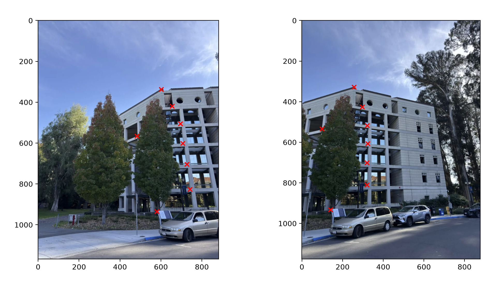
Set 2: System of Equations (Ah=b)
| 5.7989e+02 | 9.3491e+02 | 1.0 | 0.0 | 0.0 | 0.0 | -8.1379e+04 | -1.3120e+05 |
| 0.0 | 0.0 | 0.0 | 5.7989e+02 | 9.3491e+02 | 1.0 | -5.4070e+05 | -8.7172e+05 |
| 7.4169e+02 | 8.2620e+02 | 1.0 | 0.0 | 0.0 | 0.0 | -2.3719e+05 | -2.6421e+05 |
| 0.0 | 0.0 | 0.0 | 7.4169e+02 | 8.2620e+02 | 1.0 | -6.0094e+05 | -6.6941e+05 |
| 7.2652e+02 | 7.0359e+02 | 1.0 | 0.0 | 0.0 | 0.0 | -2.3233e+05 | -2.2500e+05 |
| 0.0 | 0.0 | 0.0 | 7.2652e+02 | 7.0359e+02 | 1.0 | -5.0913e+05 | -4.9305e+05 |
| 7.0630e+02 | 6.0120e+02 | 1.0 | 0.0 | 0.0 | 0.0 | -2.2856e+05 | -1.9455e+05 |
| 0.0 | 0.0 | 0.0 | 7.0630e+02 | 6.0120e+02 | 1.0 | -4.2843e+05 | -3.6468e+05 |
| 6.9492e+02 | 5.0513e+02 | 1.0 | 0.0 | 0.0 | 0.0 | -2.2311e+05 | -1.6218e+05 |
| 0.0 | 0.0 | 0.0 | 6.9492e+02 | 5.0513e+02 | 1.0 | -3.5962e+05 | -2.6140e+05 |
| 6.5447e+02 | 4.1917e+02 | 1.0 | 0.0 | 0.0 | 0.0 | -1.9430e+05 | -1.2444e+05 |
| 0.0 | 0.0 | 0.0 | 6.5447e+02 | 4.1917e+02 | 1.0 | -2.7872e+05 | -1.7851e+05 |
| 4.8256e+02 | 5.6580e+02 | 1.0 | 0.0 | 0.0 | 0.0 | -1.2361e+05 | -1.4493e+05 |
| 0.0 | 0.0 | 0.0 | 4.8256e+02 | 5.6580e+02 | 1.0 | -1.5821e+05 | -1.8551e+05 |
| 6.0138e+02 | 3.3701e+02 | 1.0 | 0.0 | 0.0 | 0.0 | -5.9137e+04 | -3.3139e+04 |
| 0.0 | 0.0 | 0.0 | 6.0138e+02 | 3.3701e+02 | 1.0 | -3.2117e+05 | -1.7998e+05 |
| h1 |
| h2 |
| h3 |
| h4 |
| h5 |
| h6 |
| h7 |
| h8 |
| 140.3347 |
| 932.4091 |
| 319.7893 |
| 810.2273 |
| 319.7893 |
| 700.7727 |
| 323.6074 |
| 606.5909 |
| 321.0620 |
| 517.5000 |
| 296.8802 |
| 425.8636 |
| 256.1529 |
| 327.8636 |
| 98.3347 |
| 534.0455 |
Set 2: Recovered Homography Matrix (H)
| -3.67973015e-01 | -1.01814456e-01 | 2.80012189e+02 |
| -5.90619331e-01 | -3.96781376e-01 | 5.67809506e+02 |
| -1.15735042e-03 | -5.05039421e-04 | 1.00000000e+00 |
A.3: Warp the Images
To make a rectangular shape that has been warpped back to a rectangle, we can't just move pixels around since that would leave gaps in our display. Instead, we will use the inverse of the homography matrix we found before to see where it came from and sample the pixel value from the same source location. There are two interpolation methods we can use: nearest neighbor and bilinear. For nearest neighbor, the algorithm quickly rounds the source coordinate to the closest pixel (nearest neighbor). For bilinear interpolation, instead of just 1 pixel being chosen (the closest one), the 4 surrounding pixels are weighed based on how far from the target pixel and their values are scaled accordingly. As you can see, the nearest neighbor sampling makes straight lines more jagged since there is no smoothing factor that comes from averaging multiple pixels. This is extremely evident on the left side of the lamp box (image 1). When the inputs are blurry (like the projector screen), the differences are harder to catch.
Warping Results: Box
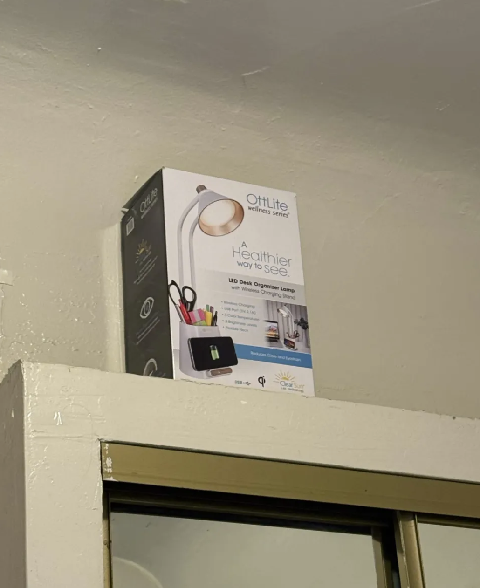
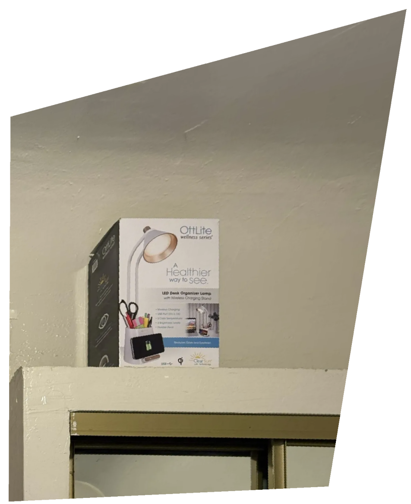
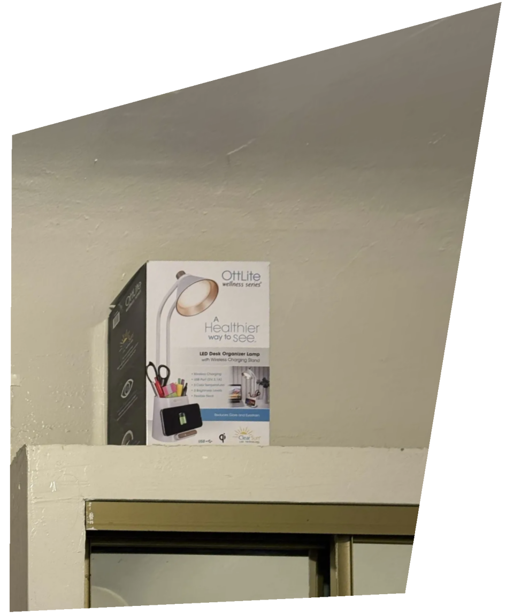
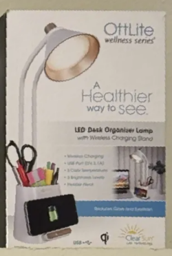
Warping Results: Menu
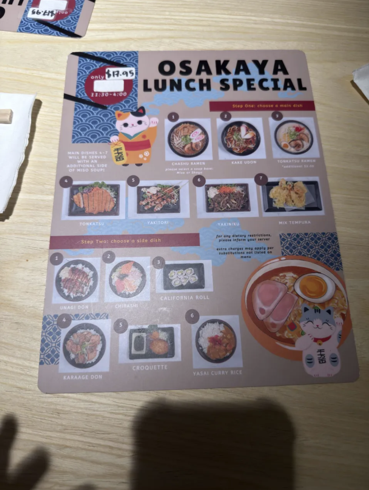
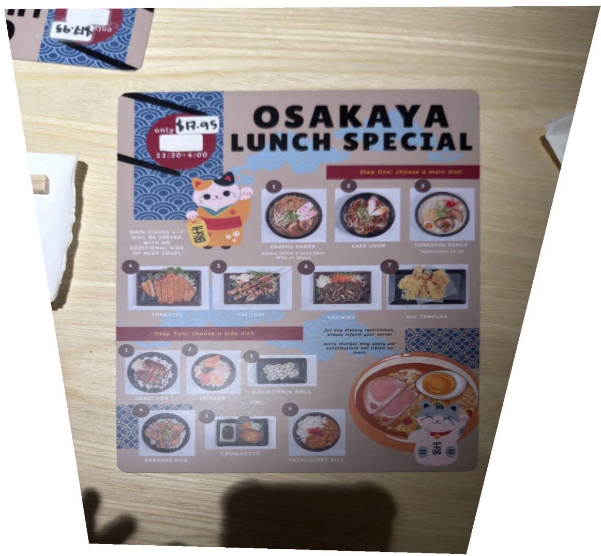
Warping Results: Projector
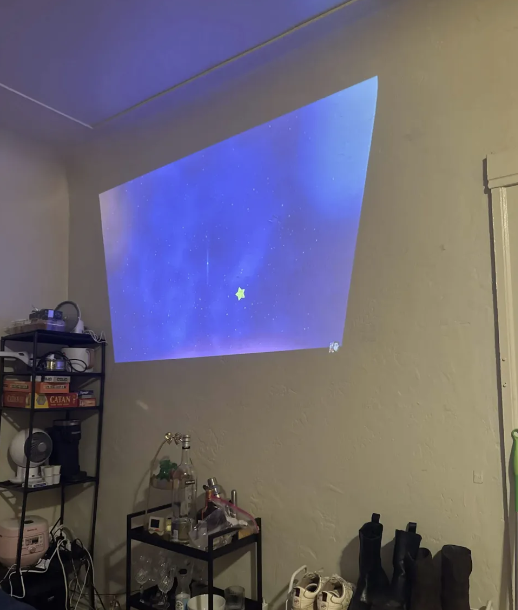
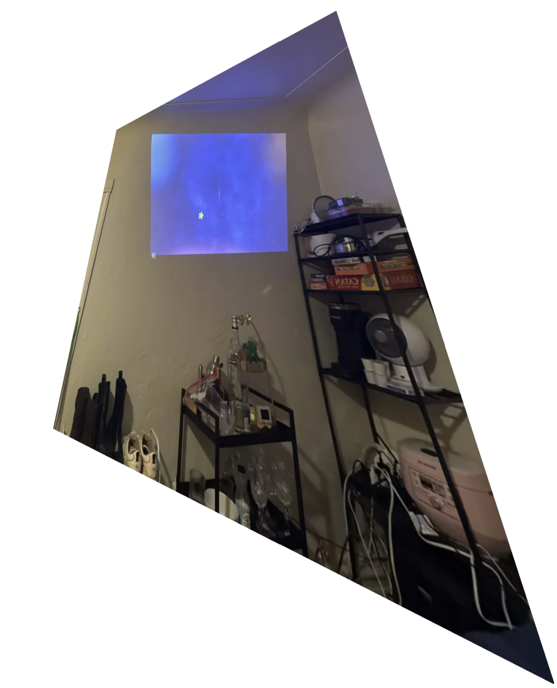
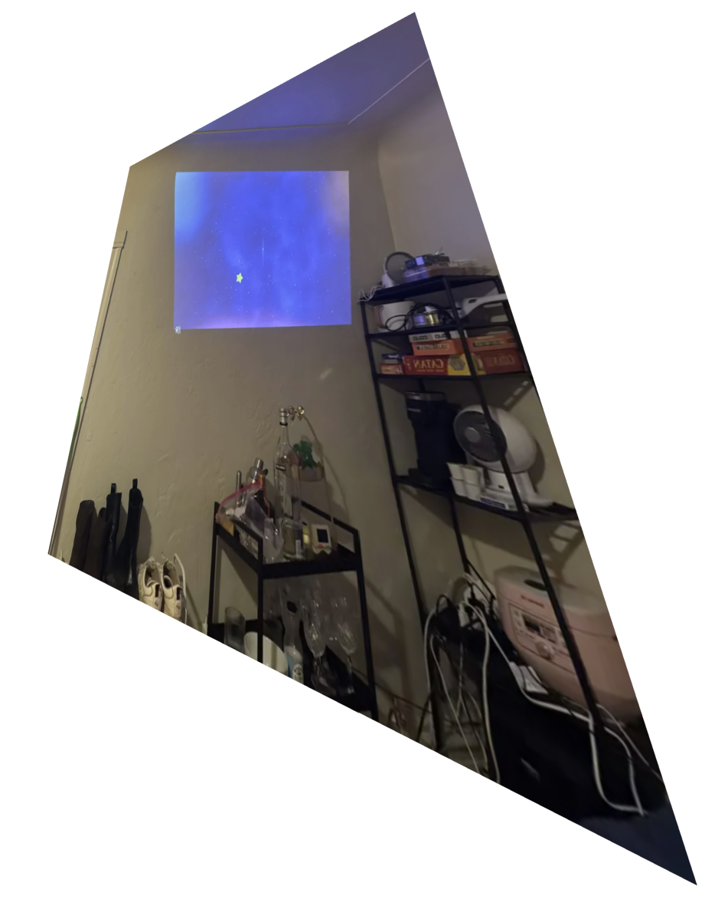
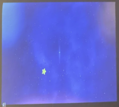
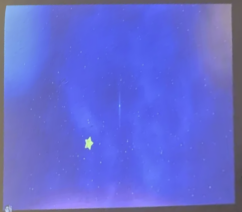
A.4: Blend the Images into a Mosaic
- We find the matching points between the left and center images and the right and center images (using ginput).
- Compute the homographies for each pair using our algorithm from part A.2.
- Using the different matrices we get back and the 4 corners of each image, we figure out the maximum size of our output and set our output to this so we don't end up accidentally cropping, especially on the left since we use the center image as our center as well.
- Each image is inversed wrapped (part A.3) using bilinear interpolation, since this prevents the jagged edges that comes with nearest neighbor.
- Feathering, which uses a weighted average to remove seams, is implemented so each image does not have a hard seam at the edges. By weighing the edges less, the images can fade into each other creating a smooth mosaic.
Mosaic Set 1: Free Speech Movement Cafe
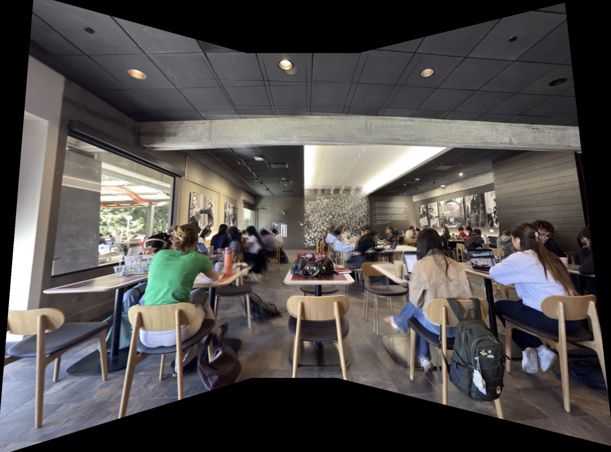
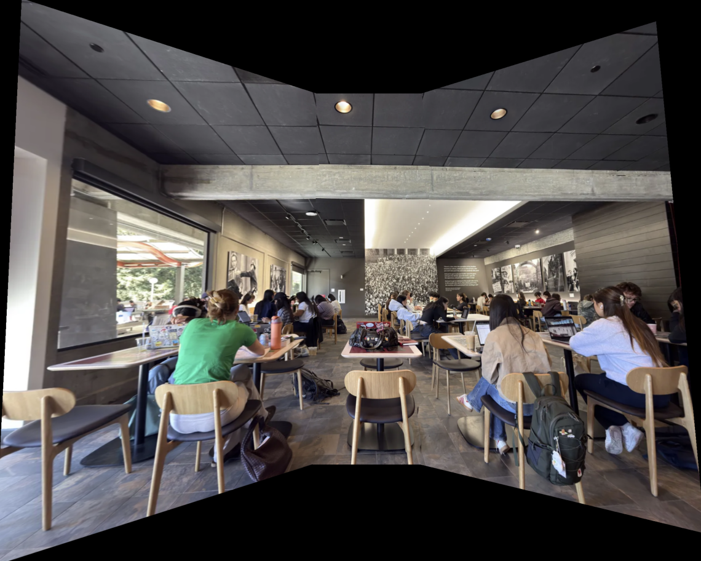
As you can see, the feathering causes ghosting, which is where we see double of some elements. To fix this, we use a 2 level Laplacian blend (similar to project 2). The low frequencies help give the color a smooth transition while the high frequencies are sampled from the image that has a larger weight on the pixel (usually means its closer to the center of the taken picture). Lastly, the normalization helps us not accidentally blend the black background we have on our output image.
Mosaic Set 2: Building Front
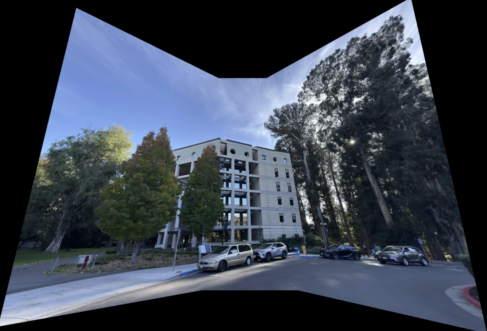
Mosaic Set 3: Inside Gateway
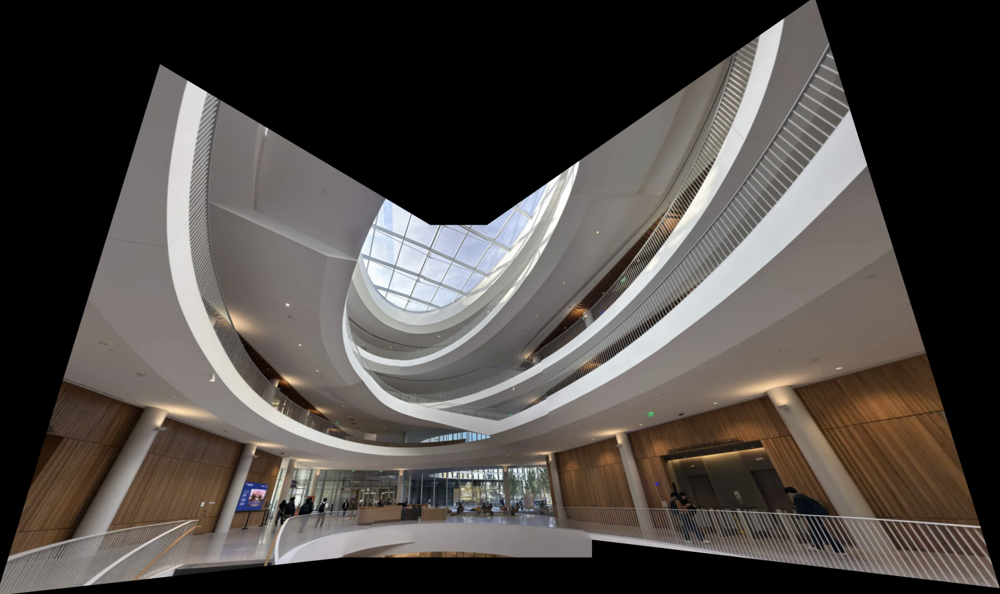